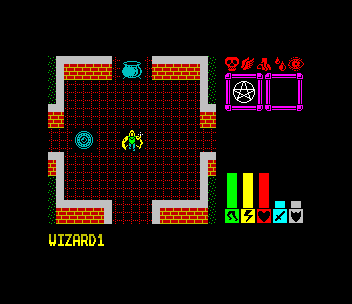
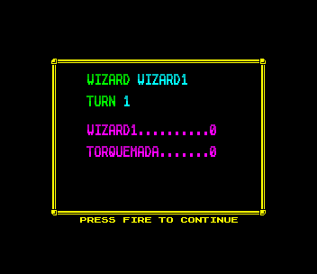

<meta charset="utf-8">
<meta name="viewport" content="width=device-width, initial-scale=1">
<title>{{title}}</title>
<link rel="preconnect" href="https://fonts.googleapis.com">
<link rel="stylesheet" href="https://fonts.googleapis.com/css2?family=Lato:wght@400;700;900&family=IBM+Plex+Mono:wght@400;500&display=swap">
<style>
:root{
  --bg:#23262d; --paper:#e9e7e1; --surface:#ffffff; --surface-2:#f1efea; --line:#d5d3cc; --line-soft:#e0ded8;
  --ink:#2f3136; --ink-soft:#55585f; --ink-mute:#80838a;
  --link:#1f5fa8; --link-hover:#154480; --accent:#1f5fa8;
  --amber:#c25a00; --cyan:#1f5fa8; --coral:#d04a3a; --green:#2a8a4a; --violet:#4a5bd6; --hl:#fff0c2;
  --chip:#2f3136; --chip-ink:#ffffff;
  --c64blue:#40318d; --c64grey:#686868;
  --fd:'Lato',system-ui,sans-serif; --fb:'Lato',system-ui,sans-serif; --fm:'IBM Plex Mono',ui-monospace,Menlo,monospace;
  --col:1080px; --gx:68px; --fs:17px; --lh:1.6; --hw:900; --h1:46px; --h2:26px; --sy:48px; --pp:26px; --r:10px;
  --plate-shadow:0 1px 2px rgba(0,0,0,.05),0 4px 14px rgba(0,0,0,.05);
}
*{box-sizing:border-box}
html{background:var(--bg);min-height:100%}
body{background:var(--paper);color:var(--ink);font-family:var(--fb);font-size:var(--fs);line-height:var(--lh);max-width:var(--col);margin:0 auto;min-height:100vh;padding:0 0 4rem}
h1,h2,h3{font-weight:var(--hw);letter-spacing:-.01em;text-wrap:balance;color:var(--ink);margin:0}
.wrap{padding:0 var(--gx)}
.hero{padding:48px var(--gx) 8px;text-align:left}
.eyebrow{font-family:var(--fm);font-size:12px;letter-spacing:.08em;text-transform:uppercase;color:var(--ink-mute);margin:0 0 10px}
.hero h1{font-size:var(--h1);line-height:1.15;letter-spacing:-.02em;margin:0 0 14px}
.hero .sub{margin:0 0 .6em;color:var(--ink-soft)}
section{padding:var(--sy) 0 24px}
section:last-of-type{border-bottom:none}
.fig{font-family:var(--fm);font-size:12px;letter-spacing:.08em;text-transform:uppercase;color:var(--ink-mute);margin:0 0 10px}
h2.t{font-size:var(--h2);margin-bottom:12px}
.lede{color:var(--ink-soft);margin:0 0 30px}
.plate{background:var(--surface);border:1px solid var(--line);border-radius:var(--r);padding:var(--pp);box-shadow:var(--plate-shadow)}
.cap{font-size:14px;color:var(--ink-mute);margin-top:14px;line-height:1.55}
.cap b{color:var(--ink);font-weight:700}
code{font-family:var(--fm);font-size:.82em;background:var(--chip);color:var(--chip-ink);border-radius:4px;padding:2px 6px;overflow-wrap:break-word;-webkit-box-decoration-break:clone;box-decoration-break:clone}

.loc-row{display:flex;flex-wrap:wrap;gap:18px;align-items:flex-start}
.loc-row>div{min-width:0}
.loc-cv{image-rendering:pixelated;display:block;max-width:100%;height:auto;background:#000;border-radius:4px}
.loc-bar{display:flex;flex-wrap:wrap;gap:8px;align-items:center;margin:0 0 12px;font-family:var(--fm);font-size:13px}
.loc-bar button,.loc-bar select{font:inherit;padding:5px 10px;border:1px solid var(--line);border-radius:6px;background:var(--surface-2);color:var(--ink);cursor:pointer}
.loc-bar button[aria-pressed="true"]{background:var(--ink);color:#fff}
.loc-info{font-family:var(--fm);font-size:13px;line-height:1.55;min-width:260px;flex:1}
.loc-info table,.loc-tab{border-collapse:collapse;font-family:var(--fm);font-size:13px}
.loc-info td,.loc-tab td,.loc-tab th{padding:3px 8px;border-bottom:1px solid var(--line-soft);text-align:left;vertical-align:top}
.loc-tab th{color:var(--ink-mute);font-weight:500}
.loc-tab td.n,.loc-tab th.n{text-align:right}
.loc-scroll{overflow-x:auto;max-width:100%}
.loc-pads{display:grid;grid-template-columns:repeat(4,auto);gap:8px;justify-content:start}
.loc-pads button{font-family:var(--fm);font-size:13px;padding:8px 10px;border:1px solid var(--line);border-radius:6px;background:var(--surface-2);cursor:pointer;text-align:left}
.loc-pads button:hover{background:var(--hl)}
.loc-shots{display:flex;flex-wrap:wrap;gap:14px}
.loc-shots figure{margin:0;flex:1;min-width:220px}
.loc-shots img{width:100%;image-rendering:pixelated;border-radius:4px;display:block}
.loc-shots figcaption{font-size:14px;color:var(--ink-mute);margin-top:6px}
.loc-meter{height:10px;background:var(--surface-2);border-radius:5px;overflow:hidden;margin:4px 0 10px}
.loc-meter i{display:block;height:100%;background:var(--coral)}
</style>
<!-- tabs -->
<header class="hero">
  <p class="eyebrow">{{year}} · {{publisher}}</p>
  <h1>{{title}}</h1>
  <p class="sub">Up to four wizards share one 36 by 36 square island, summon armies, fight over treasure and race for a portal that opens on a random turn. Every scenario brings its own map, creatures, words and even pieces of code that the engine calls at fixed moments.</p>
</header>
<main class="wrap">

<section>
  <p class="fig">01 · The game</p>
  <h2 class="t">Each player is a wizard, playing for points</h2>
  <p class="lede">A turn is a budget of action points, spent on steps, blows, spells and picking things up.</p>
  <div class="loc-shots">
    <figure><figcaption>A wizard at home in scenario 1. The map window shows seven squares by seven; the information display on the right shows what stands on the square under the cursor.</figcaption></figure>
    <figure><figcaption>The panel before each turn: whose turn it is, the turn number and each wizard's victory points.</figcaption></figure>
  </div>
  <p>Lords of Chaos was written by Julian Gollop and released by Blade Software in 1990. One to four people play, taking turns at the same Spectrum, and in a one-player game the computer plays a wizard of its own. Wizards cast spells that summon dragons, goblins, ghosts and the rest, and their creatures walk, fly, fight and carry things. Points come from kills, from treasure carried out, and from escaping through the portal before it closes.</p>
  <p>The tape holds the program, a wizard designer and three scenarios. A scenario is not just a map. It is a 12 KB block loaded over the top of memory, holding the creatures' figures, the terrain's rules, every word the game prints, the graphics and some routines of its own. The engine underneath stays the same.</p>
</section>

<section>
  <p class="fig">02 · The map window</p>
  <h2 class="t">Seven squares by seven, drawn from the scenario's tables</h2>
  <p class="lede">Every map square is a block of three by three characters. Pick a scenario, move the window with the arrows, and choose a square to see what the scenario says about it.</p>
  <div class="plate">
    <div class="loc-bar">
      <select id="mw-scen" aria-label="Scenario"><option value="1">Scenario 1</option><option value="2">Scenario 2</option><option value="3">Scenario 3</option></select>
      <button type="button" data-mv="0,-1" aria-label="Move the window left">←</button>
      <button type="button" data-mv="-1,0" aria-label="Move the window up">↑</button>
      <button type="button" data-mv="1,0" aria-label="Move the window down">↓</button>
      <button type="button" data-mv="0,1" aria-label="Move the window right">→</button>
      <button type="button" id="mw-sight" aria-pressed="false">Line of sight</button>
      <span id="mw-at"></span>
    </div>
    <div class="loc-row">
      <div><canvas id="mw-cv" class="loc-cv" width="168" height="168" style="width:336px"></canvas></div>
      <div class="loc-info" id="mw-info">Loading the listings…</div>
    </div>
    <p class="cap">Drawn by the page from the engine's character sets and the scenario's things, graphics and colour sets (<code>$A94C</code> draw_map, <code>$A7B6</code> draw_block). <b>test_map.js</b> runs the game's own draw_map on the kit's Z80 for 864 windows, every byte of the screen they cover. Drawn from three play snapshots taken in ZEsarUX, with the creatures and objects in them, the window matches the emulator's screen with 0 pixels different. The squares here are as the scenario file has them, before the start of a game scatters objects and places the wizards.</p>
  </div>
  <p>The map is 36 rows of 36 bytes (the pointer at <code>$D030</code>). A byte below <code>$50</code> is a terrain, <code>$50</code> to <code>$83</code> an object lying there, and <code>$8C</code> and up a creature. Each value has a five-byte entry in the scenario's table of things: which of four character sets to draw from, which graphic (nine character numbers), which colour set (nine attributes), and two bytes for animation that the interrupt counts down every other frame (<code>$A891</code>). Water ripples and fire flickers because the interrupt swaps their graphics, and the main program never has to think about it.</p>
  <p>The map wraps round: walking off the right edge brings a creature in on the left. The window scrolls a row or column at a time when the cursor reaches its edge (<code>$629B</code>).</p>
  <p>With <b>Line of sight</b> on, the chosen square is a creature on the ground, and every square it could see is lit. The game traces a line square by square from the viewer to each square within 18 half squares, a straight step counting 2 and a diagonal 3, and a square whose terrain has bit 0 set in its flags (<code>$D38E</code>) blocks it (<code>$B41B</code>). The squares next to the viewer are always seen. <b>test_sight.js</b> holds the page's line to the game's code on 20,000 pairs of squares in each scenario.</p>
</section>

<section>
  <p class="fig">03 · Terrain</p>
  <h2 class="t">What each kind of ground costs, resists and burns</h2>
  <p class="lede">Five bytes for each of 78 terrains (<code>$D208</code>) decide how much a step costs, how hard the terrain is to break, and how the area spells take on it.</p>
  <div class="plate">
    <div class="loc-bar"><select id="tr-scen" aria-label="Scenario"><option value="1">Scenario 1</option><option value="2">Scenario 2</option><option value="3">Scenario 3</option></select></div>
    <div class="loc-scroll" style="max-height:420px;overflow-y:auto"><table class="loc-tab" id="tr-tab"></table></div>
    <p class="cap">From each scenario's terrain records at <code>$D208</code> and its flags at <code>$D38E</code>, named by the scenario's own messages. "–" in the step column is <code>$FF</code>, a square nothing can walk into.</p>
  </div>
  <p>The first byte is the cost of a step in action points (<code>$CA2B</code>). A diagonal step costs half as much again. A flying creature, a ghost, and a creature whose type matches the terrain (a swimmer in water) always pay 4. A step also costs half its cost in stamina (<code>$B4EB</code>).</p>
  <p>The second byte is the terrain's toughness. A creature that walks into a square it cannot enter attacks the terrain instead, for 6 action points and 6 stamina, and breaks it when a random number beats the toughness (<code>$6862</code>). The top two bits of the fifth byte say what the broken square becomes. Magic lightning breaks terrain the same way.</p>
  <p>The third and fourth bytes are the area spells' chances: how readily the ground floods or grows tangle vine, and how readily it catches magic fire or gooey blob (<code>$86B2</code>). A 0 means the spell does nothing there. Fire spreads each turn to neighbours by the same numbers (<code>$7DBD</code>).</p>
</section>

<section>
  <p class="fig">04 · Creatures and combat</p>
  <h2 class="t">What one blow does</h2>
  <p class="lede">The scenario holds the figures of every creature it uses. Choose an attacker and a defender to see what one blow does.</p>
  <div class="plate">
    <div class="loc-bar">
      <select id="cb-scen" aria-label="Scenario"><option value="1">Scenario 1</option><option value="2">Scenario 2</option><option value="3">Scenario 3</option></select>
      <label>Attacker <select id="cb-a"></select></label>
      <label>Defender <select id="cb-d"></select></label>
    </div>
    <div id="cb-out" class="loc-info"></div>
    <div class="loc-scroll" style="margin-top:14px"><table class="loc-tab" id="cb-tab"></table></div>
    <p class="cap">The table is each scenario's creature types (the pointer at <code>$D003</code>, twelve bytes a type from <code>$90</code>). The blow follows <code>$8645</code>; <b>test_combat.js</b> runs the game's code for every combat and defence from 0 to 255 with the random number fixed at each value it can take, and compares the damage with the page's.</p>
  </div>
  <p>An attack costs 8 action points and 8 stamina (<code>$84EC</code>). The blow is a random number below twice the attacker's combat plus 2, less the defender's defence. Anything left comes off the defender's constitution. If the defender survives with 4 action points and 4 stamina it strikes back at once.</p>
  <p>The figures in the table are the type's own. In play they move: a strength potion adds 20 to combat, a protection potion 25 to defence, a weapon in use adds its combat, and the best defence among the weapons carried counts. Then both are divided by the number of times the creature's constitution goes into its most (<code>$9342</code>): nothing changes until it is down to half, when they halve, and at a third they are a third.</p>
  <p>A blow of more than a quarter of the creature's starting constitution adds one to its fatal wound, up to 7, and every turn after that it loses twice the wound in constitution (<code>$7755</code>, <code>$7560</code>). Undead creatures take damage only from magic: another undead creature, a magic weapon or a spell (<code>$8605</code>).</p>
</section>

<section>
  <p class="fig">05 · Spells</p>
  <h2 class="t">Forty-five spells, priced by level</h2>
  <p class="lede">A spell costs its base price times its level plus one, and every cast lowers its level by one.</p>
  <div class="plate">
    <div class="loc-bar"><label>Level <input type="range" id="sp-lv" min="1" max="8" value="3"> <b id="sp-lvn">3</b></label></div>
    <div class="loc-scroll"><table class="loc-tab" id="sp-tab"></table></div>
    <p class="cap">Base costs from <code>$B4BE</code>, names from scenario 1's messages through <code>$80A0</code>. The cost is worked out by <code>$81D4</code>.</p>
  </div>
  <p>A wizard's record holds a byte for each of the 45 spells: the level it was designed with in the high four bits and the level left in the low four (<code>$CEEA</code>). Casting needs 8 action points and the mana, and takes one level off (<code>$82A2</code>). A summon spell brings as many creatures as its level, on free squares round the wizard (<code>$8342</code>). Mana comes back by a 25th of the starting mana each turn (<code>$7560</code>).</p>
  <p>Potions are brewed rather than cast at a creature: an empty cauldron, the right ingredient and the wizard on one square, and the spell turns the cauldron into the potion with the level plus 3 gulps in it (<code>$848A</code>). Dragons need a dragon potion made the same way from dragon herb before the summon works (<code>$8320</code>).</p>
</section>

<section>
  <p class="fig">06 · Sound</p>
  <h2 class="t">Sound: sixteen effects from one loop</h2>
  <p class="lede">Every sound in the game comes from the same eight-byte recipe and the same routine. Press one to hear it.</p>
  <div class="plate">
    <div class="loc-pads" id="sd-pads"></div>
    <p class="cap">Played from the edges of the speaker that the page works out from each sound's eight bytes at <code>$C7B0</code>, timed as the game's loop at <code>$C856</code> takes them. <b>test_sound.js</b> runs the game's routine on the kit's Z80 for all sixteen and compares the time of every click. The Spectrum's speaker plays a square wave; low clicks below about 100 Hz are hard to hear on laptop and phone speakers.</p>
  </div>
  <p>A sound is a number of groups, a number of repeats, and three notes. Each note is an empty loop of its delay followed by one click of the speaker (<code>$C856</code>). After each group every delay moves on by its own step, which turns three clicks into a rising or falling sweep. The game plays nothing during a turn the computer plays out of sight, and a sound started while the map is being drawn gets a step after each row, so the drawing and the sound share the time.</p>
</section>

<section>
  <p class="fig">07 · Random numbers</p>
  <h2 class="t">Random numbers from the refresh register</h2>
  <p class="lede">The game's dice depend on how many instructions the processor has run.</p>
  <p>random_below (<code>$A737</code>) takes the Z80's refresh register, R, which goes up by one with every instruction fetched, and ex-ors it with three bytes at each of two pointers that walk through memory a byte a call (<code>$606F</code>, <code>$6071</code>), and with a counter that every poll of the controls moves on (<code>$FFF8</code>). It draws again until the number is below the limit asked for.</p>
  <p>So the outcome of a blow depends on exactly how long everything before it took, down to the instruction, and on how many times the game polled the controls while the player held a key. Two players who make the same moves at different speeds see different fights.</p>
</section>

<section>
  <p class="fig">08 · The computer's turn</p>
  <h2 class="t">How the computer moves its creatures</h2>
  <p class="lede">The computer moves each of its creatures up to 50 times, choosing at each step from a fixed order of checks.</p>
  <p>computer_move_creature (<code>$974E</code>) loads a creature and asks, in order, whether it should drink a potion, eat, use a vial, pick something up, cast a spell, shoot, chase an enemy it can beat, run from one it cannot, or walk on along its route. Each test sets a reason it is done (<code>$D181</code>) when it ends the creature's move.</p>
  <p>Routes and waypoints belong to the scenario (<code>$D00F</code>, <code>$D013</code>). A creature the computer summons gets a route that suits it: flyers, carriers, swimmers or wizards, by the route's flags (<code>$A4FA</code>). Some are made guards and stay by their wizard, by the type's bodyguard chance. Creatures the computer cannot see do not exist for it: each creature keeps a list of up to twenty enemies it has seen, with their combat and defence (<code>$9C8C</code>), and chooses its prey from that list (<code>$9DAD</code>). The <a href="levels.html">Levels</a> tab draws each scenario's routes on its map.</p>
  <p>The computer's wizard tries spells in the order of the scenario's priorities (<code>$D3DC</code>), halving a spell's priority each time it casts it, so it varies what it casts (<code>$A382</code>). Each scenario also brings its own routines for the attack spells, which pick a target from the enemy list.</p>
</section>

<section>
  <p class="fig">09 · Saving to tape</p>
  <h2 class="t">Every file goes through the ROM's tape routines</h2>
  <p class="lede">Every file the game reads or writes goes through the ROM's own tape routines, with a twelve-character header of its own.</p>
  <p>A wizard is saved as its 70-byte record, named after the first word of its name and its level: MERLIN at level 2 becomes <code>MERLIN2</code> with the extension WIZ (<code>$CCBD</code>). A saved game is the object table and creature records, then everything from the wizard records to the top of memory, with the extension SVG (<code>$C74D</code>). A scenario is 12,285 bytes loaded at <code>$D003</code> with the extension GAM (<code>$C708</code>).</p>
  <p>Loading reads headers until one matches, and the match looks only at the first character of the name, whatever the extension (<code>$C675</code>). The <a href="discoveries.html">Discoveries</a> tab has what that does. In a game against the computer, the end of turn menu lets a player save only five times (<code>$C8E4</code>).</p>
</section>

</main>
<footer style="margin:16px 0 0;padding:22px var(--gx) 0;border-top:1px solid #e0ded8;font-family:'IBM Plex Mono',ui-monospace,Menlo,monospace;font-size:12px;color:#80838a"><a href="https://github.com/gamesexplained/gamesexplained" style="color:#1f5fa8;text-decoration:none">GitHub</a> · <a href="https://discord.gg/3V9GWyRDWV" style="color:#1f5fa8;text-decoration:none">Discord</a><br>© Games Explained contributors. Write-ups, facts and symbol maps are available under <a href="https://creativecommons.org/licenses/by-sa/4.0/" style="color:#1f5fa8;text-decoration:none">CC BY-SA 4.0</a>; code under <a href="https://opensource.org/licenses/MIT" style="color:#1f5fa8;text-decoration:none">MIT</a></footer>
<script src="../../lib/spectrum.js"></script>
<script>
/* loc-map */
// The map window as the game draws it (draw_map $A94C, draw_block $A7B6, thing_graphic $A84A),
// on a 64 KB memory M laid out as the game's: the engine (character sets 0 and 1) under a scenario
// ($D003 up). Every drawing goes into M's own screen ($4000 bitmap, $5800 attributes), byte for
// byte as the game's routines leave it, so Spectrum.drawScreen shows it and a test can hold it to
// the game's own code run on the kit's Z80 (test_map.js).
//   LOCMap.thing(M, v)           { set, graphic, colours } of map byte v, from the things table
//   LOCMap.block(M, v, row, col) draws thing v as a square at character row and column (3 x 3 cells)
//   LOCMap.window(M, r0, c0)     draws the 7 x 7 window whose top left square is row r0, column c0,
//                                wrapping at 36, at the top left of the screen
//   LOCMap.square(M, r, c)       the map byte at row r, column c
//   LOCMap.text(M, n)            the scenario's message n as text (word numbers, control codes skipped;
//                                a new line, $FF, inside a word reads as a space)
var LOCMap = (function () {
  const w = (M, a) => M[a] | M[(a + 1) & 0xFFFF] << 8;
  // the screen address of character row r, column c, pixel line k (screen_rows $AF61)
  const pix = (r, c, k) => 0x4000 + ((r & 0x18) << 8) + ((r & 7) << 5) + (k << 8) + c;
  function thing(M, v) {
    const t = w(M, 0xD032) + 5 * v;
    return { set: M[t], graphic: M[t + 1], colours: M[t + 2] };
  }
  function block(M, v, row, col, set, graphic, colours) {
    if (set === undefined) ({ set, graphic, colours } = thing(M, v));
    const font = w(M, 0xD07A + 2 * set);
    const g = w(M, 0xD038) + 9 * graphic, cs = w(M, 0xD036) + 9 * colours;
    for (let i = 0; i < 9; i++) {
      const r = row + ((i / 3) | 0), c = col + i % 3, ch = M[g + i];
      for (let k = 0; k < 8; k++) M[pix(r, c, k)] = M[(font + 8 * ch + k) & 0xFFFF];
      M[0x5800 + 32 * r + c] = M[cs + i];
    }
  }
  const square = (M, r, c) => M[w(M, 0xD030) + 36 * (r % 36) + (c % 36)];
  function window(M, r0, c0) {
    for (let y = 0; y < 7; y++)
      for (let x = 0; x < 7; x++) block(M, square(M, r0 + y, c0 + x), 3 * y, 3 * x);
  }
  // entry n (from 1) of a list whose entries start with their length (find_entry $ABF4)
  function entry(M, base, n) { let a = base; for (let i = 1; i < n; i++) a += M[a]; return a; }
  function word(M, n) {
    const a = entry(M, w(M, 0xD00D), n);
    let s = '';
    for (let i = 1; i < M[a]; i++) { const ch = M[a + i]; s += ch === 0xFA || ch === 0xFF ? ' ' : ch < 0x80 ? String.fromCharCode(ch) : ''; }
    return s;
  }
  function text(M, n) {
    const a = entry(M, w(M, 0xD00B), n), out = [];
    for (let i = 1; i < M[a]; i++) {
      const c = M[a + i];
      if (c === 0xFF || c === 0xFD || c === 0xFC) continue;
      if (c === 0xFE) { i += 1; continue; }
      if (c === 0xFB) { i += 2; continue; }
      out.push(word(M, c));
    }
    return out.join(' ').replace(/\s+/g, ' ').trim();
  }
  // The ULA's colours, 0-7 normal and 8-15 bright (site/lib/spectrum.js's PAL)
  const PAL = [[0,0,0],[0,0,215],[215,0,0],[215,0,215],[0,215,0],[0,215,215],[215,215,0],[215,215,215],
               [0,0,0],[0,0,255],[255,0,0],[255,0,255],[0,255,0],[0,255,255],[255,255,0],[255,255,255]];
  // Copies the screen's character cells, rows r0 to r0 + rows - 1 and columns c0 on, from M into the
  // ImageData img at pixel (dx, dy), as the Spectrum shows them (flash off).
  function paint(M, img, r0, c0, rows, cols, dx, dy) {
    const W = img.width, d = img.data;
    for (let r = r0; r < r0 + rows; r++) for (let c = c0; c < c0 + cols; c++) {
      const at = M[0x5800 + 32 * r + c], br = (at >> 6 & 1) << 3;
      const ink = PAL[(at & 7) | br], paper = PAL[(at >> 3 & 7) | br];
      for (let k = 0; k < 8; k++) {
        const b = M[pix(r, c, k)];
        for (let x = 0; x < 8; x++) {
          const col = b & (0x80 >> x) ? ink : paper;
          const o = 4 * ((dy + 8 * (r - r0) + k) * W + dx + 8 * (c - c0) + x);
          d[o] = col[0]; d[o + 1] = col[1]; d[o + 2] = col[2]; d[o + 3] = 255;
        }
      }
    }
  }
  // The whole 36 x 36 map into img (864 x 864 pixels), each square drawn by block() in a scratch
  // copy of M and painted from its screen. over(v, r, c) may give another map byte to draw.
  function whole(M, img, over) {
    const S = M.slice();
    for (let r = 0; r < 36; r++) for (let c = 0; c < 36; c++) {
      const v = over ? over(square(M, r, c), r, c) : square(M, r, c);
      block(S, v, 0, 0);
      paint(S, img, 0, 0, 3, 3, 24 * c, 24 * r);
    }
  }
  return { thing, block, window, square, text, word, entry, paint, whole, PAL };
})();
// end of loc-map
</script>
<script>
/* loc-sight */
// Lines across the wrapping map, as the game traces them (line_setup $B045, line_step $B0D0,
// trace_line $B41B), and the distance in half squares (distance $724D), on a memory M holding a
// scenario. Pure functions: the game keeps the same numbers at $FF3B-$FF49, and test_sight.js holds
// these to its code.
//   LOCSight.line(r1, c1, r2, c2)   the squares the line visits after the first, the last included,
//                                   each [row, column, length so far in half squares]
//   LOCSight.blocked(M, r1, c1, r2, c2, flag)   the first square on the way, the ends left out, whose
//                                   terrain has `flag` among its flags at $D38E (1 sight on the
//                                   ground, $10 in the air), as [row, column]; null when none does
//   LOCSight.distance(r1, c1, r2, c2)   twice the longer of the two differences plus the shorter
var LOCSight = (function () {
  // the difference from a to b the shorter way round 36, and the step that goes that way
  function axis(a, b) {
    if (a === b) return [0, 0];
    let d = a - b, step = -1;
    if (d < 0) d += 36;
    if (d >= 18) { step = 1; d = 36 - d; }
    return [d, step];
  }
  const wrap = v => (v === 255 || v === -1) ? 35 : v === 36 ? 0 : v;
  function line(r1, c1, r2, c2) {
    const [dc, sc] = axis(c1, c2), [dr, sr] = axis(r1, r2);
    let long, short, lr = 0, lc = 0;
    if (dc >= dr) { long = dc; short = dr; lc = sc; } else { long = dr; short = dc; lr = sr; }
    let err = long >> 1, len = 0, r = r1, c = c1;
    const out = [];
    for (let guard = 0; guard < 80; guard++) {
      err -= short;
      if (err < 0) { err += long; c = wrap(c + sc); r = wrap(r + sr); len += 3; }
      else { c = wrap(c + lc); r = wrap(r + lr); len += 2; }
      out.push([r, c, len & 255]);
      if (r === r2 && c === c2) break;
    }
    return out;
  }
  const w = (M, a) => M[a] | M[a + 1] << 8;
  function terrainAt(M, r, c) { return M[w(M, 0xD030) + 36 * r + c]; }
  function blocked(M, r1, c1, r2, c2, flag) {
    for (const [r, c] of line(r1, c1, r2, c2)) {
      if (r === r2 && c === c2) return null;
      if (M[0xD38E + terrainAt(M, r, c)] & flag) return [r, c];
    }
    return null;
  }
  function distance(r1, c1, r2, c2) {
    const a = axis(r1, r2)[0], b = axis(c1, c2)[0];
    return 2 * Math.max(a, b) + Math.min(a, b);
  }
  return { line, blocked, distance };
})();
// end of loc-sight
</script>
<script>
/* loc-combat */
// One blow (strike_hit $8605, from $8645): a random number below twice the attacker's combat plus
// 2 (255 at most, but 256 for a combat of 255, whose INC wraps to 0; random_below $A737 takes a
// limit of 0 as 256), less the defender's defence; above 0 it is the damage, taken
// from the defender's constitution (damage_and_rider $78D6). test_combat.js holds it to the game's
// code with the random number fixed.
//   LOCCombat.limit(combat)            how many values the random number can take
//   LOCCombat.damage(combat, defence, roll)   the damage for one roll (0: the blow does nothing)
//   LOCCombat.odds(combat, defence)    { hit: the chance a blow does damage, mean: the damage a blow
//                                      does on average, most: the most it can do }
var LOCCombat = (function () {
  const limit = c => (c & 255) === 255 ? 256 : Math.min(255, 2 * ((c & 255) + 1));
  const damage = (c, d, roll) => Math.max(0, roll - (d & 255));
  function odds(c, d) {
    const n = limit(c);
    let hits = 0, sum = 0, most = 0;
    for (let v = 0; v < n; v++) { const k = damage(c, d, v); if (k > 0) { hits++; sum += k; most = k; } }
    return { hit: hits / n, mean: sum / n, most };
  }
  return { limit, damage, odds };
})();
// end of loc-combat
</script>
<script>
/* loc-sound */
// The game's sixteen sound effects as its beeper plays them (set_sound $C83A, play_sound $C856):
// each a number of groups, each group its three notes played over a number of times, each note an
// empty loop of its delay (NOP NOP NOP DJNZ, 25 T-states a turn) and then a click of the speaker
// (bit 4 of port $FE flipped); after each group every delay moves on by its step, in a byte. The
// T-states are the Z80's own, uncontended, as test_sound.js measures the game's code taking them.
//   LOCSound.edges(bytes)  bytes: the sound's eight bytes (sounds $C7B0, eight a sound); gives
//                          { clicks: [T-state of each click, from the start], tstates: the whole }
//   LOCSound.render(edges, rate)   a Float32Array of samples at `rate` per second, the speaker's
//                          level as a square wave, the Spectrum's clock 3.5 MHz
var LOCSound = (function () {
  function edges(bytes) {
    const s = Array.from(bytes);
    let t = 13 + 4;                                  // LD A,(groups); LD B,A
    const clicks = [];
    const groups = s[0] || 256, repeats = s[1] || 256;
    for (let g = 0; g < groups; g++) {
      t += 11 + 13 + 4;                              // PUSH BC; LD A,(repeats); LD B,A
      for (let r = 0; r < repeats; r++) {
        t += 11 + 7 + 10 + 10;                       // PUSH BC; LD B,3; LD HL; LD DE
        for (let n = 0; n < 3; n++) {
          const turns = s[3 + 2 * n] || 256;
          t += 11 + 7 + turns * 25 - 5;              // PUSH BC; LD B,(HL); the delay loop
          t += 13 + 7 + 13;                          // LD A,(speaker); XOR $10; LD (speaker),A
          clicks.push(t + 11);                       // OUT ($FE),A, at its end, as the kit's Z80 writes
          t += 11 + 10 + 11 + (n < 2 ? 13 : 8);      // OUT; POP BC; ADD HL,DE; DJNZ
        }
        t += 10 + (r < repeats - 1 ? 13 : 8);        // POP BC; DJNZ
      }
      t += 10 + 7 + 10;                              // LD HL; LD B,3; LD DE
      for (let n = 0; n < 3; n++) {
        s[3 + 2 * n] = (s[3 + 2 * n] + s[2 + 2 * n]) & 255;
        t += 7 + 6 + 7 + 7 + 6 + (n < 2 ? 13 : 8);
      }
      t += 10 + (g < groups - 1 ? 13 : 8);           // POP BC; DJNZ
    }
    return { clicks, tstates: t + 10 };              // RET
  }
  function render(e, rate) {
    const CLOCK = 3500000, n = Math.ceil(e.tstates / CLOCK * rate) + 1;
    const out = new Float32Array(n);
    let level = 0, k = 0;
    for (let i = 0; i < n; i++) {
      const t = i / rate * CLOCK;
      while (k < e.clicks.length && e.clicks[k] <= t) { level ^= 1; k++; }
      out[i] = level ? 0.25 : -0.25;
    }
    return out;
  }
  return { edges, render };
})();
// end of loc-sound
</script>
<script>
(function () {
'use strict';
const $ = id => document.getElementById(id);
const hex = (n, w = 2) => '$' + n.toString(16).toUpperCase().padStart(w, '0');
const w16 = (M, a) => M[a] | M[a + 1] << 8;
if (typeof Spectrum === 'undefined') { $('mw-info').textContent = 'This widget needs the site\'s spectrum.js, which is served with the built site.'; return; }
const mems = {};
let engine;
function memory(n) {
  if (!mems[n]) mems[n] = Spectrum.load('parts/scenario-' + n + '/listing.json').then(s => {
    const M = engine.ram.slice();
    for (let a = 0xD003; a < 0x10000; a++) if (s.has[a]) M[a] = s.ram[a];
    return M;
  });
  return mems[n];
}
const name = (M, v) => LOCMap.text(M, v + 1);
const typeAt = (M, t) => w16(M, 0xD003) + 12 * (t - 0x90);

// ---- 02 the map window
const mw = { n: 1, r: 6, c: 6, sel: [3, 3], sight: false };
const cv = $('mw-cv'), ctx = cv.getContext('2d');
async function drawWindow() {
  const M = (await memory(mw.n)).slice();
  LOCMap.window(M, mw.r, mw.c);
  const img = ctx.createImageData(168, 168);
  LOCMap.paint(M, img, 0, 0, 21, 21, 0, 0);
  ctx.putImageData(img, 0, 0);
  const [sy, sx] = mw.sel, vr = (mw.r + sy) % 36, vc = (mw.c + sx) % 36;
  if (mw.sight) {
    ctx.fillStyle = 'rgba(0,0,0,0.6)';
    for (let y = 0; y < 7; y++) for (let x = 0; x < 7; x++) {
      const r = (mw.r + y) % 36, c = (mw.c + x) % 36, d = LOCSight.distance(vr, vc, r, c);
      const seen = d < 4 || (d < 19 && !LOCSight.blocked(M, vr, vc, r, c, 1));
      if (!seen) ctx.fillRect(24 * x, 24 * y, 24, 24);
    }
  }
  ctx.strokeStyle = '#ffff00'; ctx.lineWidth = 2; ctx.strokeRect(24 * sx + 1, 24 * sy + 1, 22, 22);
  $('mw-at').textContent = 'window at row ' + mw.r + ', column ' + mw.c;
  const v = LOCMap.square(M, vr, vc), t = 0xD208 + 5 * v, th = LOCMap.thing(M, v);
  const cost = M[t] === 255 ? 'cannot be entered' : M[t] + ' action points';
  $('mw-info').innerHTML = '<b>' + name(M, v) + '</b> at row ' + vr + ', column ' + vc + '<br>terrain ' + hex(v) +
    '<table><tr><td>step</td><td>' + cost + '</td></tr><tr><td>toughness</td><td>' + M[t + 1] + '</td></tr>' +
    '<tr><td>flood, vine</td><td>' + (M[t + 2] & 15) + ', ' + (M[t + 2] >> 4) + '</td></tr>' +
    '<tr><td>fire, blob</td><td>' + (M[t + 3] & 15) + ', ' + (M[t + 3] >> 4) + '</td></tr>' +
    '<tr><td>breaks into</td><td>' + name(M, M[t + 4] >> 6) + '</td></tr>' +
    '<tr><td>flags</td><td>' + hex(M[0xD38E + v]) + (M[0xD38E + v] & 1 ? ', blocks sight' : '') + '</td></tr>' +
    '<tr><td>drawn as</td><td>set ' + th.set + ', graphic ' + th.graphic + ', colours ' + th.colours + '</td></tr></table>';
}
document.querySelectorAll('[data-mv]').forEach(b => b.addEventListener('click', () => {
  const [dr, dc] = b.dataset.mv.split(',').map(Number);
  mw.r = (mw.r + dr + 36) % 36; mw.c = (mw.c + dc + 36) % 36; drawWindow();
}));
$('mw-scen').addEventListener('change', e => { mw.n = +e.target.value; drawWindow(); });
$('mw-sight').addEventListener('click', e => { mw.sight = !mw.sight; e.target.setAttribute('aria-pressed', mw.sight); drawWindow(); });
cv.addEventListener('click', e => {
  const b = cv.getBoundingClientRect();
  mw.sel = [Math.min(6, Math.floor((e.clientY - b.top) / b.height * 7)), Math.min(6, Math.floor((e.clientX - b.left) / b.width * 7))];
  drawWindow();
});

// ---- 03 terrain
async function drawTerrain() {
  const M = await memory(+$('tr-scen').value);
  let h = '<tr><th>terrain</th><th>name</th><th class="n">step</th><th class="n">tough</th><th class="n">flood</th><th class="n">vine</th><th class="n">fire</th><th class="n">blob</th><th>breaks into</th><th>sight</th></tr>';
  for (let v = 0; v < 78; v++) {
    const t = 0xD208 + 5 * v;
    h += '<tr><td>' + hex(v) + '</td><td>' + name(M, v) + '</td><td class="n">' + (M[t] === 255 ? '–' : M[t]) + '</td><td class="n">' + M[t + 1] +
      '</td><td class="n">' + (M[t + 2] & 15) + '</td><td class="n">' + (M[t + 2] >> 4) + '</td><td class="n">' + (M[t + 3] & 15) + '</td><td class="n">' + (M[t + 3] >> 4) +
      '</td><td>' + name(M, M[t + 4] >> 6) + '</td><td>' + (M[0xD38E + v] & 1 ? 'blocks' : '') + '</td></tr>';
  }
  $('tr-tab').innerHTML = h;
}
$('tr-scen').addEventListener('change', drawTerrain);

// ---- 04 creatures and combat
const FLAGS = ['mount', 'undead', 'weapons', 'rides', 'f4', 'swims', 'f6', 'USE'];
let cbM;
async function drawCreatures() {
  const M = cbM = await memory(+$('cb-scen').value);
  let h = '<tr><th>type</th><th>name</th><th class="n">AP</th><th class="n">fly</th><th class="n">stam</th><th class="n">con</th><th class="n">comb</th><th class="n">def</th><th class="n">res</th><th class="n">carry</th><th class="n">VP</th><th>flags</th></tr>';
  const opts = [];
  for (let k = 0x90; k < 0xAA; k++) {
    const nm = name(M, k).trim();
    if (!nm) continue;
    const a = typeAt(M, k), f = M[a + 11];
    h += '<tr><td>' + hex(k) + '</td><td>' + nm + '</td>' + [0, 1, 2, 3, 4, 5, 6, 7, 10].map(i => '<td class="n">' + M[a + i] + '</td>').join('') +
      '<td>' + FLAGS.filter((_, i) => f & (1 << i)).join(' ') + '</td></tr>';
    opts.push('<option value="' + k + '">' + nm + '</option>');
  }
  $('cb-tab').innerHTML = h;
  const a = $('cb-a').value, d = $('cb-d').value;
  $('cb-a').innerHTML = opts.join(''); $('cb-d').innerHTML = opts.join('');
  const pick = (sel, old, want) => { const o = [...sel.options]; sel.value = (o.find(x => x.value === old) || o.find(x => x.textContent === want) || o[0]).value; };
  pick($('cb-a'), a, 'TROLL'); pick($('cb-d'), d, 'DWARF');
  drawBlow();
}
function drawBlow() {
  const M = cbM, A = +$('cb-a').value, D = +$('cb-d').value;
  const ca = M[typeAt(M, A) + 4], dd = M[typeAt(M, D) + 5], con = M[typeAt(M, D) + 3];
  const o = LOCCombat.odds(ca, dd);
  $('cb-out').innerHTML = 'combat ' + ca + ' against defence ' + dd + ': a random number from 0 to ' + (LOCCombat.limit(ca) - 1) + ', less ' + dd +
    '<div class="loc-meter"><i style="width:' + (100 * o.hit).toFixed(1) + '%"></i></div>' +
    'a blow does damage ' + (100 * o.hit).toFixed(0) + '% of the time, ' + o.mean.toFixed(1) + ' points on average and ' + o.most + ' at most; the defender has ' + con + ' constitution' +
    (o.mean > 0 ? ', about ' + Math.ceil(con / o.mean) + ' blows' : ', so it cannot be hurt this way');
}
$('cb-scen').addEventListener('change', drawCreatures);
$('cb-a').addEventListener('change', drawBlow);
$('cb-d').addEventListener('change', drawBlow);

// ---- 05 spells
function spellName(M, s) {          // spell_name $80A0
  const m = s < 0x19 ? 0x91 + s : s < 0x20 ? 0x6C + s - 0x19 : s < 0x22 ? 0x42 + s - 0x20 : s === 0x22 ? 0x38 : 0xD3 + s - 0x23;
  return LOCMap.text(M, m);
}
async function drawSpells() {
  const M = await memory(1), lv = +$('sp-lv').value;
  $('sp-lvn').textContent = lv;
  let h = '<tr><th>spell</th><th>name</th><th class="n">base</th><th class="n">cost at level ' + lv + '</th></tr>';
  for (let s = 0; s < 45; s++) h += '<tr><td>' + hex(s) + '</td><td>' + spellName(M, s) + '</td><td class="n">' + M[0xB4BE + s] + '</td><td class="n">' + M[0xB4BE + s] * (lv + 1) + '</td></tr>';
  $('sp-tab').innerHTML = h;
}
$('sp-lv').addEventListener('input', drawSpells);

// ---- 06 sound
let actx;
function play(n) {
  actx = actx || new (window.AudioContext || window.webkitAudioContext)();
  const e = LOCSound.edges(engine.ram.subarray(0xC7B0 + 8 * n, 0xC7B8 + 8 * n));
  const data = LOCSound.render(e, actx.sampleRate);
  const buf = actx.createBuffer(1, data.length, actx.sampleRate);
  buf.getChannelData(0).set(data);
  const src = actx.createBufferSource(); src.buffer = buf; src.connect(actx.destination); src.start();
}
function drawPads() {
  let h = '';
  for (let n = 0; n < 16; n++) {
    const e = LOCSound.edges(engine.ram.subarray(0xC7B0 + 8 * n, 0xC7B8 + 8 * n));
    h += '<button type="button" data-snd="' + n + '">sound ' + n + '<br><small>' + e.clicks.length + ' clicks, ' + (e.tstates / 3500).toFixed(0) + ' ms</small></button>';
  }
  $('sd-pads').innerHTML = h;
  document.querySelectorAll('[data-snd]').forEach(b => b.addEventListener('click', () => play(+b.dataset.snd)));
}

Spectrum.load('parts/engine/listing.json').then(e => {
  engine = e;
  drawPads();
  return Promise.all([drawWindow(), drawTerrain(), drawCreatures(), drawSpells()]);
}).catch(err => { $('mw-info').textContent = 'Could not load the listings: ' + err.message; });
})();
</script>
